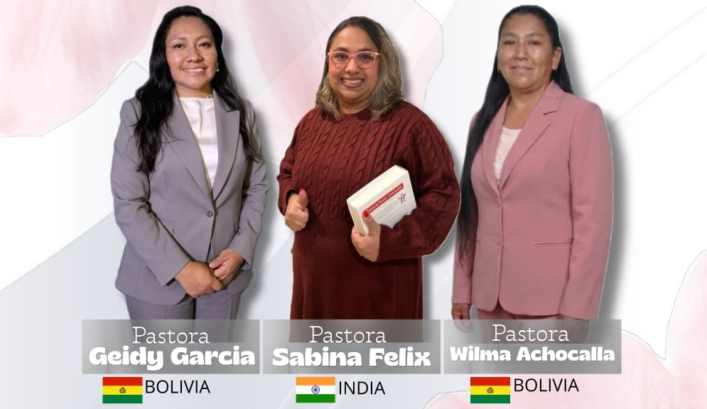

Inscríbete ahora
Inscríbete ahora
El Tema
"La Novia de Cristo"
Un tiempo preparado para la edificación, comunión, renovación espiritual y fortalecimiento de la fe de cada mujer en el Señor. Ven a recibir Palabra, comunión y bendición junto a mujeres de toda la congregación.
Invitadas Especiales
Nuestras Expositoras
Tres mujeres de Dios compartirán Su Palabra durante el congreso, trayendo enseñanza, testimonio y bendición para cada asistente.

Programa
Horario del Congreso
Importante
Requisitos e Inscripción
Inscripción gratuita
Incluye alimentación durante el congreso
Registro hasta el 29 de agosto
Confirma tu lugar con anticipación por WhatsApp
Edad mínima: 16 años
Se sugiere no asistir con niños para que cada participante pueda recibir la Palabra con plena atención y disfrutar el programa.
Inscríbete en un clic
Sobre el ministerio

Ministerio Misión Boliviana — Payacollo
Una iglesia firme en la fe, comprometida con servir al Señor y llevar Su Palabra a las comunidades de Payacollo y Sipe Sipe. Con corazón abierto y amor por el prójimo, nos reunimos para crecer juntos en Cristo.
Pastor Félix Costano Coca
Ubicación